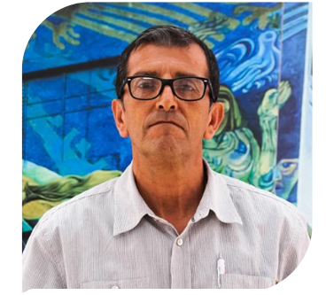
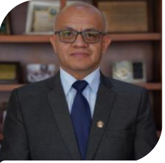

Nikolay Aguirre, Ph. D.
Rector
Ingeniero Forestal y Ph.D. en Ciencias Forestales, con más de 25 años de experiencia en investigación sobre ecología, biodiversidad y restauración, con más de 85 publicaciones.
Contacto
Horario Atención
Lunes a viernes 8:00 a 12:30
y de 15:00 a 18:30
y de 15:00 a 18:30
Elvia Maricela
Zhapa Amay
Vicerrectora
Doctora en Contabilidad y Auditoría, con maestrías en Docencia e Investigación y Gerencia Contable Financiera. Experta en diversas áreas contables y financieras, con amplia trayectoria docente, investigadora y directiva en la UNL. Ha publicado libros y artículos científicos.
Contacto
Horario Atencion
Lunes a viernes 8:00
a 12:30 y de 15:00 a 18:30
Lunes a viernes 8:00
a 12:30 y de 15:00 a 18:30


Dr. Milton Mejía Balcazar, Mg.Sc.
Director de la Unidad de Educación a Distancia y en Línea
Ver información


Dr. Mario Sánchez Armijos, Mg.Sc.
Decano de la Facultad Jurídica, Social y Administrativa
Ver información

Yovany Salazar Estrada, Ph.D.
Decano de la Facultad de Educación, el Arte y la Comunicación
Ver información

Ing. Julio Eduardo Romero Sigcho, Ph.D.
Decano de la Facultad de Energía, las Industrias y los Recursos Naturales No Renovables
Ver información
Dr. Roosevelt Armijos Tituana, Mg.Sc.
Decano de la Facultad Agropecuaria y de Recursos Naturales Renovables
Ver información